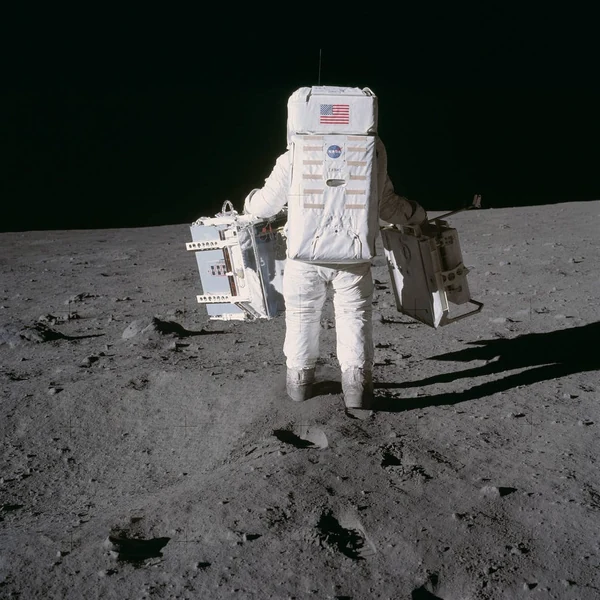

Áreas
Administración de tierras
Catastro rural, urbano, fiscal y legal.
Geodesia
Topografía, fotogrametría, teledetección y GNSS.
Ciencia de datos espaciales
Estadística, machine learning y deep learning.
Investigación
Dinámica vertical GNSS en Wanchaq: ARDL, ARIMAX-Fourier y VECM →
Colque Caillahua & Chullo Puclla, 2026. Zenodo.
Proyectos
Catastro Wanchaq 3D →
Dashboard Actividad Económica →
Markov para datos GNSS →
Croquis catastrales con AutoLISP →
OasisCalor · mapa de calor e isócronas →
Computer Vision con OASIS IA →
Control de calidad de datos LiDAR →
OASIS Topology →
QField + Oasis Fotos →
Calculadora de velocidades VEMOS2022 →
Convertidor de alturas →
Topología catastral automatizada →
Gestor de fotos catastrales →
Plugin QGIS SNCP →
Herramientas catastrales →
Red Geodésica Activa · planificación GNSS →
GIS Catastral San Sebastián →
GIS Catastral Urubamba →
GIS Catastral Quellouno →
Oasis Radio · reproductor de mixes →
Galería
Fotografía, territorio y geodesia · @percyquasar
160 fotos